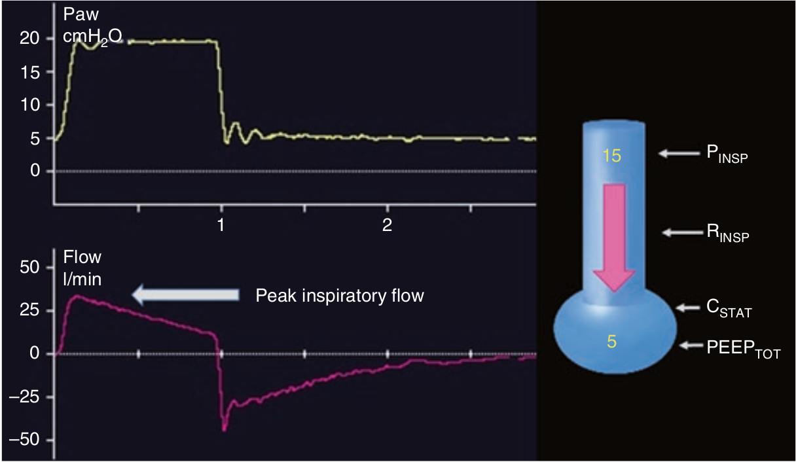

حداکثر شدت جریان دمی به دو عامل بستگی دارد: شدت گرادیان فشاری و مقاومت دمی:
Peak Flow = (setPPEAK - PEEPTOT) / RINSP
در این فرمول setPPEAK مقدار فشار دمی تنظیم شده توسط کاربر می باشد.

در کنترل فشاری شدت جریان حداکثر دمی چه موقع کاهش می یابد؟
۱ - افزایش PEEP داخلی
۲ - افزایش فشار دمی توسط کاربر
۳ - کاهش الاستانس
۴ - کاهش مقاومت
۵ - افزایش فشار رانش